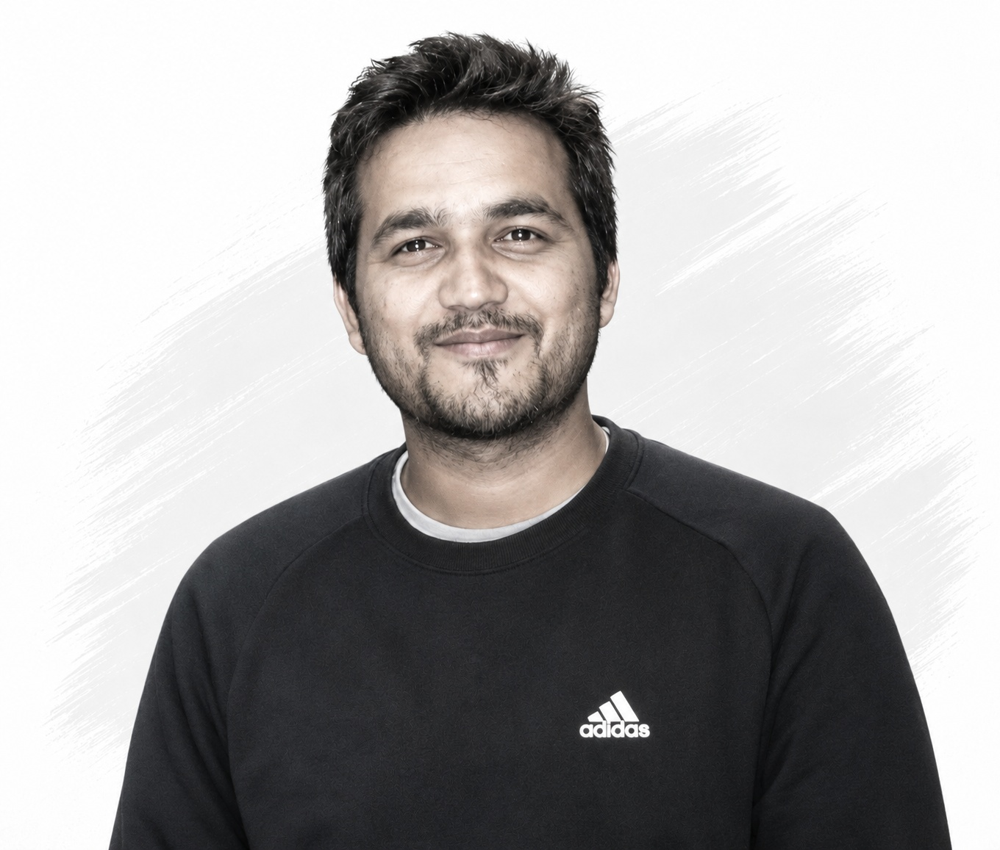

HELLO, I'M
SAURABH
DHASMANA
Technical Writer &
Documentation Strategist
From aircraft systems to clinical software, I work where detailed product knowledge meets the people who need to use it. Across 18+ years and diverse industries, I've shaped technical information into documentation people can navigate, apply, and rely on.

THE EXPERIENCE I'VE BUILT
Writing with
Purpose
I've learned that effective technical writing goes beyond explaining features. It requires understanding how a product works, how people use it, and what they need to accomplish. I bring together product knowledge, technical depth, and user empathy to turn complex information into clear, practical guidance.
Documentation
Strategy
My experience has shaped how I approach documentation as an evolving product rather than a collection of deliverables. From content architecture and information design to release planning, governance, and lifecycle management, I focus on building documentation that is structured, maintainable, discoverable, and aligned with user needs.
Leadership &
Collaboration
I've learned to work across Product, UX, Engineering, QA, Support, Training, and subject matter experts to bring different perspectives into documentation. I believe in mentoring writers, establishing repeatable processes, involving documentation early in product development, and making quality a shared responsibility.
Innovation &
Improvement
I continuously look for better ways to research, create, manage, and deliver content. From improving documentation workflows and introducing process efficiencies to exploring AI-assisted solutions, I focus on reducing repetitive effort, improving quality, and giving writers more time to solve meaningful user and product challenges.
ABOUT ME
A career built from fixing planes to fixing documentation challenges.
My professional journey began in engineering and gradually evolved into technical communication. Moving from aircraft systems to unified communications, enterprise software, healthcare, and clinical research has meant repeatedly stepping into unfamiliar domains, learning complex products, and understanding how different industries operate.
I've never been afraid of taking on something new or challenging. I enjoy entering unfamiliar territory, asking questions, connecting the dots, and finding practical ways to get things done. I believe the ability to learn, adapt, and deliver matters just as much as the experience you bring to a role.
Over the years, I've developed a reputation for taking ownership and finding a way forward, even when the challenges aren't straightforward. One comment from an AVP I worked with has stayed with me: "I don't know how he does it, but he always gets the job done, no matter what's thrown at him." I consider that one of the most meaningful compliments I've received because it reflects the way I approach work.
That approach has also been recognized throughout my career. I've received two Best Employee of the Month awards, along with several Productivity and Quality awards at Capgemini. I also received the Out of the Box award for applying critical thinking to resolve delivery challenges and find practical solutions.
Beyond work, I'm someone who enjoys exploring ideas, experimenting with technology, and discovering new possibilities. I value continuous learning, practical thinking, and meaningful improvement. I believe there's always a better way to solve a problem, communicate an idea, or make someone's experience a little easier.
WHAT I BELIEVE
- Good documentation is a product in itself and should be treated as one.
- Be the user of what you produce to understand what users actually want to know about the product.
- Test the application or component like a tester. It significantly improves the quality of the writing.
- Use engineering input to understand logic and functionality, not as the sole source for content.
- Documentation quality improves when writers work early with product teams.
- Clear processes make good documentation repeatable.
- AI should be an integral part of modern documentation practices, helping writers work smarter, improve quality, and focus more on user needs, while ensuring accuracy, human oversight, and responsible use.